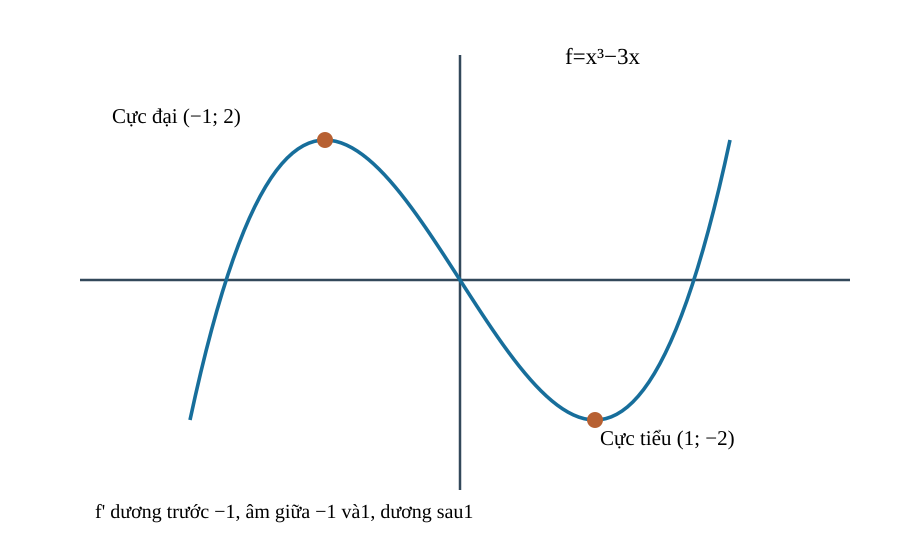
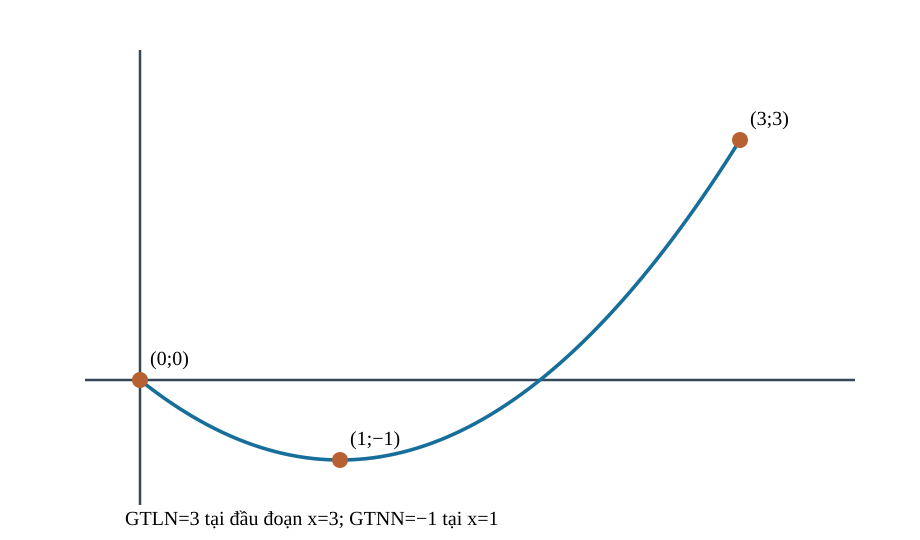
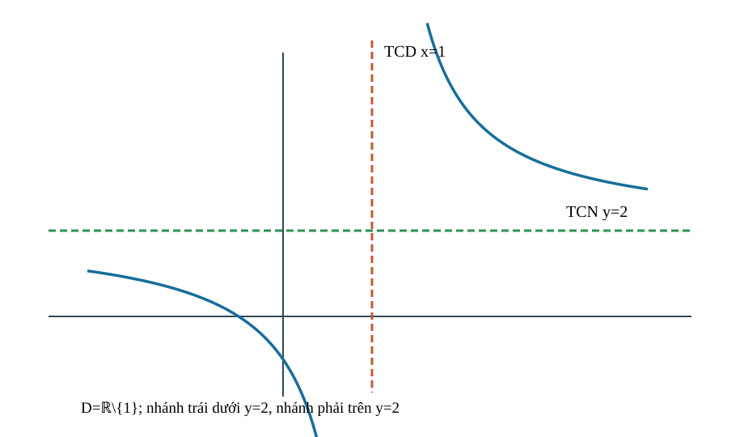
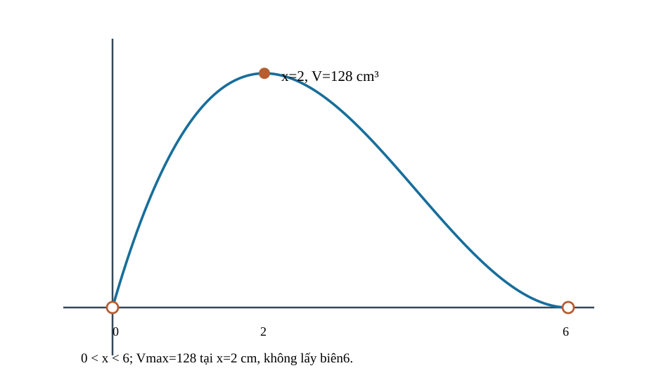

HỌC THEO CHUYÊN ĐỀ · CĐ10 · TOÁN THPT
Khám phá thêm: Mô hình trực quan Chuyên đề 10 (tùy chọn).
Kiến thức
1. Từ độ dốc tại một điểm đến toàn bộ hình dạng đồ thị
Khi đã biết tính đạo hàm, em có thể biết một đồ thị đang nghiêng lên hay xuống tại một vị trí. Nhưng một người thiết kế hộp giấy không chỉ muốn biết độ nghiêng của đồ thị thể tích: họ cần biết kích thước nào thật sự làm hộp có thể tích lớn nhất. Muốn trả lời, ta phải nhìn cả miền được phép, những khoảng tăng giảm, điểm cực trị, giá trị trên biên, hành vi khi x tiến xa và cả khả năng một giá trị lớn nhất không được đạt.
Vì vậy ta đi từ định nghĩa đồng biến/nghịch biến đến dấu đạo hàm, từ điểm cực trị địa phương sang bài toán so toàn miền, rồi nối bảng biến thiên với tiệm cận và đồ thị. Chỉ sau khi hiểu toàn bộ hàm số, ta mới đặt điều kiện vật lý và chọn phương án tối ưu; việc giải \(f'(x)=0\) chỉ là một bước tìm ứng viên, không phải đáp án cuối.
1.1. Đồng biến và nghịch biến
Khi nhìn hai điểm trên đồ thị và thấy điểm phía phải cao hơn, ta mới biết hàm tăng giữa hai vị trí đó; chừng ấy chưa đủ để khẳng định hàm tăng trên cả khoảng. Điều cần xét là mọi cặp số \(x_1<x_2\) thuộc cùng một khoảng \(I\).
ĐỊNH NGHĨA — Đồng biến, nghịch biến. Hàm \(f\) đồng biến nghiêm ngặt trên khoảng \(I\) khi với mọi \(x_1,x_2\in I\), \(x_1<x_2\Rightarrow f(x_1)<f(x_2)\); nghịch biến nghiêm ngặt khi \(x_1<x_2\Rightarrow f(x_1)>f(x_2)\). Phải xét mọi cặp trong cùng khoảng, không chỉ hai điểm minh họa.
Vì vậy miền xác định và việc hai điểm có thuộc cùng một khoảng là điều kiện phải kiểm trước.
Xét \(f(x)=-2x+5\) trên \(\mathbb R\). Với bất kỳ \(x_1<x_2\), ta có \(f(x_2)-f(x_1)=-2(x_2-x_1)<0\). Do đó \(f(x_2)<f(x_1)\) và hàm nghịch biến trên toàn trục số. Ta chọn cách so hiệu hai giá trị để chứng minh trực tiếp định nghĩa, trước khi dùng công cụ đạo hàm.
Ví dụ
Đề bài: Chứng minh f(x)=−x³ nghịch biến trên ℝ bằng định nghĩa.
Lời giải: Với x₁<x₂, x₂³−x₁³=(x₂−x₁)(x₂²+x₁x₂+x₁²)>0. Suy ra f(x₂)−f(x₁)<0 với mọi cặp, nên f nghịch biến. Thử hai số riêng lẻ chưa đủ.
Vận dụng \(f(x)=3x-1\) đồng biến hay nghịch biến trên \(\mathbb R\)? Hãy giải thích bằng hai giá trị \(x_1<x_2\).
Đối chiếu
\(f(x_2)-f(x_1)=3(x_2-x_1)>0\), nên hàm đồng biến trên \(\mathbb R\). Nếu em chỉ thế hai giá trị cụ thể, hãy quay lại điều kiện **với mọi** cặp \(x_1<x_2\) trong khoảng. **Kiểm lỗi** Nếu em kết luận chiều biến thiên từ hai điểm mẫu, đọc lại **Kiến thức 1.1** và giải **Bài 1** rồi **Bài 2**. Với mọi \(x_1<x_2\) trong cùng khoảng, phải kiểm dấu hiệu hai giá trị hoặc dấu đạo hàm, không chỉ quan sát hình.1.2. Dấu đạo hàm
TÍNH CHẤT — Dấu đạo hàm. So hai giá trị đôi khi khó; dấu đạo hàm cho công cụ mạnh hơn khi đủ điều kiện. Cách so trực tiếp \(f(x_2)-f(x_1)\) có thể rất dài với những hàm phức tạp. Khi hàm liên tục trên mỗi đoạn con của khoảng đang xét và khả vi ở các điểm trong khoảng, đạo hàm giúp đọc chiều biến thiên hiệu quả hơn. Theo định lý giá trị trung bình, nếu \(f'(x)>0\) khắp khoảng thì hàm tăng nghiêm ngặt; nếu \(f'(x)<0\) thì giảm nghiêm ngặt. Dấu không âm hoặc không dương bảo đảm lần lượt không giảm hoặc không tăng, nhưng muốn nói nghiêm ngặt cần loại trường hợp có đoạn hằng.
Chẳng hạn, \(f(x)=x^2\) có \(f'(x)=2x\). Ở phía trái 0, đạo hàm âm nên đồ thị đi xuống; ở phía phải 0, đạo hàm dương nên đồ thị đi lên. Việc chia tại \(x=0\) cho ta hai khoảng biến thiên và cực tiểu. Trái lại, hàm \(x^3\) có đạo hàm bằng 0 ở 0 nhưng vẫn tăng khi đi qua điểm này: một nghiệm \(f'(x)=0\) chưa đủ kết luận có cực trị.
Ví dụ
Đề bài: Tìm chiều biến thiên của f=x³−6x.
Lời giải: D=ℝ; f′=3(x²−2), bằng 0 ở ±√2, dương khi |x|>√2, âm khi |x|<√2. Hàm tăng ở hai khoảng ngoài và giảm ở khoảng giữa; dùng đạo hàm vì hàm khả vi.
Vận dụng \(f(x)=x^3\) có tăng nghiêm ngặt trên \(\mathbb R\) không? Vì sao \(f'(0)=0\) không bác bỏ điều đó?
Đối chiếu
Có. Với \(x_1<x_2\) thì \(x_1^3<x_2^3\); đạo hàm \(3x^2\ge0\) và chỉ bằng 0 tại một điểm, không tạo ra đoạn hằng. Nếu em gán mọi nghiệm \(f'=0\) thành cực trị, hãy lập dấu đạo hàm **hai phía** điểm ấy. **Kiểm lỗi** Nếu em gán mọi nghiệm \(f'=0\) thành cực trị hoặc quên các khoảng đổi dấu, đọc **Kiến thức 1.2**, làm **Bài 3** và **Bài 5**. Lập trục dấu \(f'\), phân biệt một điểm dừng với khoảng tăng/giảm.1.3. Điểm cấm và khoảng biến thiên
KIẾN THỨC CẦN GHI NHỚ — Điểm cấm và khoảng biến thiên. Trước bảng dấu, luôn xác định đúng miền. Đạo hàm chỉ giúp đánh giá chiều biến thiên nơi hàm số được xác định và đủ điều kiện khả vi. Chẳng hạn, \(f(x)=\dfrac1{x-2}\) có mẫu bằng 0 tại \(x=2\), nên miền là \(\mathbb R\setminus\{2\}\). Đạo hàm \(f'(x)=-\dfrac1{(x-2)^2}<0\) trên miền, nhưng kết luận đúng phải viết: hàm nghịch biến trên từng khoảng \(( -\infty,2)\) và \((2,+\infty)\). Hai nhánh không được nối qua một điểm không thuộc miền.
Vì thế, khi khảo sát một hàm số, ta luôn tìm miền trước, rồi mới giải \(f'(x)=0\), xác định điểm đạo hàm không tồn tại trong miền và dựng bảng dấu trên những khoảng hợp lệ. Làm ngược thứ tự dễ dẫn đến ghi một khoảng có chứa điểm cấm hoặc kết luận “nghịch biến trên toàn miền rời” sai theo định nghĩa so mọi cặp.
Ví dụ
Đề bài: Tìm miền và các khoảng giảm của g=(x+1)/(x−3).
Lời giải: D=ℝ{3}, g′=−4/(x−3)²<0. Hàm giảm trên (−∞,3) và (3,∞) riêng biệt, không nối kết luận qua điểm x=3 không xác định.
Vận dụng \(g(x)=\sqrt{x-1}\) có miền xác định nào? Có thể nói hàm tăng trên miền đó không?
Đối chiếu
Điều kiện \(x-1\ge0\) cho miền \([1,+\infty)\). Trên \((1,+\infty)\), \(g'(x)=\dfrac1{2\sqrt{x-1}}>0\); từ giá trị ở biên \(x=1\), ta vẫn có thể nói hàm tăng trên \([1,+\infty)\). Nếu em ghi miền \(\mathbb R\), hãy kiểm điều kiện tồn tại của căn trước. **Kiểm lỗi** Nếu em kết luận nghịch biến trên toàn tập rời nhau hoặc dùng đạo hàm tại điểm cấm, đọc **Kiến thức 1.3**, làm **Bài 6** rồi **Bài 8**. Trước tiên tách miền thành các khoảng hợp lệ.1.4. Cực trị qua đổi dấu
TÍNH CHẤT — Cực trị qua đổi dấu. Đổi chiều biến thiên giúp tìm cực trị địa phương. Tại sao đổi dấu đạo hàm quan trọng hơn chỉ giải f'=0? Ta bắt đầu từ dấu f' hai phía, miền và khả vi lân cận. Điều kiện bắt buộc: hàm số phải liên tục tại điểm trong (c) và khả vi trên hai khoảng ngay bên trái, bên phải (c). Khi đó, nếu (f') dương trước (c) và âm sau (c), hàm đạt cực đại địa phương tại (c); nếu (f') âm trước và dương sau, hàm đạt cực tiểu. Không thể suy cực trị chỉ từ bảng dấu hai phía nếu giá trị (f(c)) không khớp giới hạn tại (c). Nếu không đổi dấu, f'=0 có thể là điểm dừng không cực trị. Cực đại địa phương khác giá trị lớn nhất toàn cục.
Chẳng hạn, f=x³−3x: f'=3(x−1)(x+1), dương x<−1, âm −1<x<1, dương x>1. Cực đại ở x=−1 giá trị2, cực tiểu ở x=1 giá trị−2.

Quan sát hình: Đọc sự đổi dấu + sang − ở x=−1 và − sang + ở x=1; hai cực trị địa phương phải khớp bảng dấu và tọa độ đồ thị.
Ví dụ
Đề bài: Tìm các cực trị địa phương của f=−x⁴+4x².
Lời giải: f′=−4x(x²−2), có mốc −√2,0,√2 với dấu +,−,+,−. Cực đại tại x=±√2, giá trị4; cực tiểu tại x=0, giá trị0. Đổi dấu f′ mới quyết định loại cực trị.
Vận dụng f=x² có cực tiểu ở đâu?
Đối chiếu
x=0, f' đổi âm→dương, f(0)=0. Nếu chỉ giải f'=0, lập bảng dấu qua nghiệm. **Kiểm lỗi** Nếu em chỉ giải \(f'=0\) mà không xét dấu trái/phải điểm tới hạn, đọc **Kiến thức 1.4**, làm **Bài 9** và **Bài 12**. Dấu \(+\to-\) cho cực đại, \(-\to+\) cho cực tiểu.1.5. Điểm dừng không cực trị
TÍNH CHẤT — Điểm dừng không cực trị. Không phải nghiệm của f'=0 nào cũng là cực trị. Mọi tiếp tuyến ngang có phải điểm cao nhất hoặc thấp nhất? Cần nhớ đạo hàm 0 và đổi dấu. Điều kiện f'(c)=0 chỉ là ứng viên trong nội miền khả vi, không đủ để khẳng định cực trị. f=x³ tại c=0 có đạo hàm0 nhưng vẫn tăng qua0, không cực đại hoặc cực tiểu. Cũng có cực trị không khả vi như |x| tại0; danh sách ứng viên cần xét cả điểm không khả vi trong miền.
Chẳng hạn, f=x³: f'=3x²≥0, không đổi dấu qua0 nên không có cực trị. Chọn xét dấu chứ không kết luận từ nghiệm đạo hàm.
Ví dụ
Đề bài: f=x⁵ có f′(0)=0. Có cực trị tại 0 không?
Lời giải: f′=5x⁴>0 ở mọi x≠0 nên f vẫn tăng qua 0, không có cực trị. Tiếp tuyến ngang riêng lẻ không đủ để kết luận.
Vận dụng f=x⁴ có cực tiểu tại0 không?
Đối chiếu
Có, f'=4x³ đổi âm→dương ở0; f(0)=0. Nếu bỏ điểm gấp khúc |x|, bổ sung điểm f không khả vi nhưng có giá trị. **Kiểm lỗi** Nếu em nghĩ có \(f'=0\) chắc chắn có cực trị hoặc bỏ điểm không khả vi, đọc **Kiến thức 1.5**, làm **Bài 14** và **Bài 16**. Đối chiếu \(|x|\) với \(x^5\) quanh 0.1.6. Hướng chuyển động so với tốc độ
TÍNH CHẤT — Hướng chuyển động so với tốc độ. Trong chuyển động, dấu đạo hàm cho biết hướng của tọa độ. Vận tốc âm có nghĩa vật đang đi chậm dần không? Để xác định điều đó, cần xét tọa độ s(t), v=s', tốc độ |v|. Dấu v=s'(t) cho biết chiều chuyển động trong trục đã chọn; v>0 tọa độ tăng, v<0 tọa độ giảm. Nói tốc độ |v| tăng/giảm phải xem gia tốc a=s'' và dấu v·a khi v khác0. Bảng biến thiên s không tự tương đương bảng biến thiên tốc độ.
Chẳng hạn, s(t)=t²−4t, t≥0: v=2t−4, âm t<2, 0 tại2, dương t>2; tọa độ giảm rồi tăng. a=2>0 nhưng trong (0,2), v<0 nên tốc độ giảm.
Ví dụ
Đề bài: Với s=t³−3t²+1 (m), t>0, trên (0,2) tốc độ tăng giảm thế nào?
Lời giải: v=3t(t−2)<0 trên (0,2), a=6t−6. Trên (0,1), v và a cùng âm nên |v| tăng; trên (1,2), chúng trái dấu nên |v| giảm.
Vận dụng s(t)=t², t>0, tọa độ tăng hay giảm?
Đối chiếu
v=2t>0 nên tăng. Nếu nhìn s âm hay dương để đo chiều, thay bằng dấu s'. **Kiểm lỗi** Nếu em dùng dấu tọa độ \(s(t)\) để kết luận chiều chuyển động, đọc **Kiến thức 1.6**, làm **Bài 17** và **Bài 18**. Xét vận tốc có hướng \(v=s'\), còn tốc độ là \(|v|\).2. Từ một đỉnh lân cận tới giá trị tốt nhất trên miền
Một điểm cao hơn các điểm rất gần nó có thể vẫn thấp hơn một đầu đoạn ở xa. Đó là khác biệt giữa cực đại địa phương và giá trị lớn nhất trên miền; tương tự cho cực tiểu. Để tìm giá trị thực sự tốt nhất, phải liệt kê cả điểm tới hạn, nơi đạo hàm không tồn tại và các đầu mút thuộc miền, rồi so giá trị. Nếu miền mở hoặc không bị chặn, cần xét thêm giới hạn để biết cận có được đạt hay không.
2.1. Cực trị địa phương và toàn cục
ĐỊNH NGHĨA — Cực trị địa phương và toàn cục. Một đỉnh cục bộ có chắc cao nhất trên toàn miền không? Ta đã biết cực trị qua đổi dấu, miền so sánh. Cực đại địa phương chỉ so các điểm gần c; GTLN/GTNN trên D phải so với MỌI x∈D. Một hàm có thể có nhiều cực trị địa phương, không có max/min toàn cục nếu unbounded hoặc cận không đạt.
Chẳng hạn, f=x³−3x trên ℝ có cực đại địa phương 2 tại−1 và cực tiểu−2 tại1, nhưng f→+∞/−∞ khi x→±∞ nên không có GTLN/GTNN trên ℝ.
Ví dụ
Đề bài: f=x⁴−2x² trên ℝ có cực đại địa phương ở 0; có GTLN không?
Lời giải: f′=4x(x²−1) đổi dấu + sang − tại 0 nên f(0)=0 cực đại địa phương. Nhưng f→+∞ khi |x|→∞ nên không có GTLN; GTNN=−1 tại ±1 vì f=(x²−1)²−1.
Vận dụng Hàm f=x² trên ℝ có GTNN không, GTLN không?
Đối chiếu
GTNN0 tại0; không có GTLN vì x²→∞. Nếu nói cực đại 2 là GTLN của hàm bậc ba, thử x=10. **Kiểm lỗi** Nếu em lấy cực đại địa phương làm GTLN trên toàn miền vô hạn, đọc **Kiến thức 2.1**, làm **Bài 19** và **Bài 21**. So cả biên và hành vi ở xa; muốn có GTLN phải có điểm thực sự đạt.2.2. Tồn tại GTLN/GTNN trên đoạn
Liên tục trên đoạn đóng bảo đảm có cực trị toàn cục. Khi nào chắc chắn có GTLN/GTNN dù chưa tìm được điểm đạt? Ta sử dụng định nghĩa liên tục trên đoạn đóng [a,b].
ĐỊNH LÝ — Giá trị lớn nhất, nhỏ nhất trên đoạn. Nếu \(f\) liên tục trên đoạn đóng, hữu hạn \([a,b]\), \(a<b\), thì tồn tại \(x_{\min},x_{\max}\in[a,b]\) sao cho \(f(x_{\min})\le f(x)\le f(x_{\max})\) với mọi \(x\in[a,b]\). Định lý bảo đảm các giá trị đạt được, không xác định sẵn điểm đạt.
Nếu thiếu 'đóng' hay tính liên tục thì chưa có bảo đảm; vẫn có thể đạt nhưng phải chứng minh riêng. Kết quả chỉ nói tồn tại, chưa cho tọa độ.
Xét ví dụ: f=x²−2x trên [0,3] là đa thức liên tục nên tồn tại hai giá trị. Ta còn tính được GTNN−1 tại x=1, GTLN3 tại x=3 sau so ứng viên.
Ví dụ
Đề bài: Tìm GTLN/GTNN của f=x²+2x+5 trên [−3,2].
Lời giải: Đa thức liên tục trên đoạn đóng nên đạt min/max. f=(x+1)²+4, f(−3)=8, f(−1)=4, f(2)=13. GTNN4 tại −1, GTLN13 tại 2; phải so ứng viên.
Vận dụng f=x² trên [−1,2] có GTLN?
Đối chiếu
Có, GTLN4 tại2 và GTNN0 tại0. Nếu miền mở, thử xét f=x trên (0,1) không đạt cận1. **Kiểm lỗi** Nếu em áp dụng định lí GTLN/GTNN cho miền hở hoặc không liên tục, đọc **Kiến thức 2.2**, làm **Bài 22** và **Bài 24**. Điều kiện đủ quen thuộc là **liên tục trên đoạn đóng hữu hạn**.2.3. Ứng viên và biên
Muốn tìm giá trị ấy, phải so điểm tới hạn và đầu đoạn. Vì sao chỉ giải f'=0 có thể bỏ sót GTLN tại đầu mút? Ta bắt đầu từ hàm liên tục trên [a,b], khả vi từng khoảng, giá trị ứng viên. Trên [a,b] liên tục, GTLN/GTNN đạt ở đầu mút hoặc điểm nội miền f'=0 hay không khả vi. Phương pháp: xác định miền, liệt kê đủ ứng viên, tính chính xác f tại mỗi điểm, so sánh cùng đơn vị. Điểm f'=0 ngoài đoạn phải loại.
Chẳng hạn, f=x³−3x trên [0,2], f'=3x²−3⇒ x=1 trong đoạn. f(0)=0,f(1)=−2,f(2)=2⇒GTNN−2 tại1,GTLN2 tại2. Chọn kiểm hai đầu vì cực đại không nhất thiết nội miền.
PHƯƠNG PHÁP — Ứng viên và biên. Hình bên dưới là ví dụ khác đúng với dữ liệu gốc: trên đoạn \([0,3]\), \(g(x)=x^2-2x\) có \(g'(x)=2x-2\), ứng viên nội miền \(x=1\) và hai đầu đoạn \(x=0,3\). Ta tính \(g(0)=0\), \(g(1)=-1\), \(g(3)=3\). Vậy GTNN là −1 tại 1 và GTLN là 3 tại đầu phải 3; điều này minh họa lý do không chỉ so các nghiệm đạo hàm bằng 0. Bài \(x^3-3x\) trên \([0,2]\) vừa giải dùng cùng phương pháp nhưng không phải hình đang vẽ.

Đọc hình: Ba điểm cần so của \(g=x^2-2x\) trên \([0,3]\) là \((0,0),(1,-1),(3,3)\). Đường cong đạt nhỏ nhất tại điểm nội miền nhưng lớn nhất ở đầu phải; giá trị đạo hàm ở đầu đoạn không cần bằng 0.
Ví dụ
Đề bài: Tìm GTLN/GTNN của f=x²−4x+6 trên [−1,5].
Lời giải: f′=2x−4=0 tại2; so f(−1)=11, f(2)=2, f(5)=11. GTNN2 tại2, GTLN11 tại cả −1 và5. Không bỏ qua đầu đoạn.
Vận dụng f=x²−4x trên [0,3], GTNN?
Đối chiếu
f'=2x−4=0 tại2: f(0)=0,f(2)=−4,f(3)=−3⇒GTNN−4 tại2. Nếu thấy nghiệm đạo hàm nằm ngoài đoạn, bỏ ứng viên ấy. **Kiểm lỗi** Nếu em chỉ kiểm nghiệm \(f'=0\) mà bỏ hai đầu đoạn hoặc điểm không khả vi, đọc **Kiến thức 2.3**, làm **Bài 28** và **Bài 29**. Ghi đủ các giá trị ứng viên rồi so sánh.2.4. Miền mở và khả đạt
KIẾN THỨC CẦN GHI NHỚ — Miền mở và khả đạt. Trên miền mở, một cận có thể không được đạt. f(x) tiến đến 1 nhưng không bao giờ bằng 1, có gọi GTLN=1 không? Cần nhớ tập giá trị, cận trên và điều kiện 'đạt'. Cận trên đúng không nhất thiết là maximum. Trên (0,1), f(x)=x có supremum1 nhưng không có GTLN vì x=1 bị loại. Có thể có giá trị lớn nhất trên miền mở nếu hàm có điểm nội miền đạt, phải xét trường hợp cụ thể. Không được suy từ giới hạn ở biên thành giá trị đạt.
Chẳng hạn, f=1−(x−2)² trên (0,3) có GTLN1 tại x=2 (nội miền) dù miền mở. Trái lại g=x trên (0,1) không có GTLN, chỉ supremum1.
Ví dụ
Đề bài: f=x(1−x) trên (0,1) có GTLN và GTNN không?
Lời giải: f=1/4−(x−1/2)² đạt GTLN1/4 tại x=1/2. Với x∈(0,1) thì f>0 nhưng f→0 ở hai biên bị loại, nên không có GTNN; cận dưới0 không đạt.
Vận dụng g(x)=−x trên (0,1) có GTLN0 không?
Đối chiếu
Không, vì g→0 khi x→0⁺ nhưng x=0 bị loại. Nếu ghi GTLN là cận không đạt, hãy hỏi có x∈D sao cho f(x)=cận không. **Kiểm lỗi** Nếu em gọi một cận tiến tới nhưng không đạt là GTLN/GTNN, đọc **Kiến thức 2.4**, làm **Bài 30** và **Bài 32**. Hỏi rõ có tồn tại \(x\) trong miền để \(f(x)\) bằng cận không.2.5. Miền ràng buộc
PHƯƠNG PHÁP — Miền ràng buộc. Ràng buộc có thể loại nghiệm tối ưu nằm ngoài miền. Một đáp số x tối ưu có thể vô nghĩa nếu x vi phạm điều kiện thực tế? Để xác định điều đó, cần xét bất phương trình, khoảng ràng buộc, max/min. Bài toán cực trị có ràng buộc phải lấy miền khả thi từ bối cảnh (độ dài dương, số lượng nguyên, ngân sách, khối lượng, thời gian). Sau tìm cực trị liên tục, kiểm nghiệm tối ưu có trong miền; nếu biến nguyên, so các giá trị nguyên lân cận. Không mở rộng mô hình ra ngoài điều kiện.
Chẳng hạn, Lợi ích P(x)=−(x−4)²+10 với x∈[0,3] không đạt đỉnh 10 ở x=4 vì ngoài miền; P tăng trên [0,3], GTLN P(3)=9. Chọn kiểm miền trước khi tuyên bố cực đại.
Ví dụ
Đề bài: A(x)=x(10−x), chỉ cho phép x∈[7,9]. Tìm diện tích lớn nhất.
Lời giải: A′=10−2x<0 trên [7,9], nên A giảm: GTLN A(7)=21, GTNN A(9)=9. Nghiệm không ràng buộc x=5 bị loại vì không thuộc miền.
Vận dụng Với f=−(x−5)², x∈[0,2], x tối ưu?
Đối chiếu
x=2, f(2)=−9; x=5 không hợp lệ. Nếu nghiệm f'=0 ngoài miền, kiểm đầu mút hợp lệ. **Kiểm lỗi** Nếu nghiệm tối ưu không thuộc miền ràng buộc nhưng vẫn được chọn, đọc **Kiến thức 2.5**, làm **Bài 33** và **Bài 34**. Trước khi đạo hàm cần chốt miền; nghiệm ngoài miền bị loại.2.6. Lập mô hình ba cạnh
PHƯƠNG PHÁP — Lập mô hình ba cạnh. Tối ưu bắt đầu từ biến và đại lượng mục tiêu. Tại sao một công thức đạo hàm đúng vẫn cho bài toán thực tế sai? Ta đã biết chọn biến và đơn vị, mối ràng buộc, miền. Quy trình mô hình: chọn đại lượng cần tối ưu, chọn biến và đơn vị, dùng ràng buộc để đưa mục tiêu về một biến, lập miền hợp lệ, đạo hàm và kiểm biên, rồi diễn giải kết quả theo mô hình. Không coi việc giải f'=0 là đủ chứng minh tối ưu.
Chẳng hạn, Chu vi hình chữ nhật 20 m, cạnh x∈(0,10), cạnh kia10−x, diện tích A=x(10−x). A'=10−2x=0⇒x=5, diện tích25 m² là lớn nhất vì A=25−(x−5)²≤25, đạt tại x=5.
Ví dụ
Đề bài: Dùng 24 m hàng rào làm ba cạnh hình chữ nhật sát bờ sông, tìm diện tích tối đa.
Lời giải: Gọi hai cạnh vuông góc dài x>0, cạnh thứ ba 24−2x>0; 0<x<12. A=x(24−2x)=−2(x−6)²+72≤72 m², đạt khi x=6 m, cạnh còn lại12 m. Phải mô hình đúng ba cạnh.
Vận dụng Hình chữ nhật chu vi 12 m, diện tích lớn nhất khi nào?
Đối chiếu
x=3, cạnh còn lại3, diện tích9 m². Nếu mục tiêu chưa đưa về một biến, quay lại ràng buộc trước khi đạo hàm. **Kiểm lỗi** Nếu em viết ràng buộc cho hình chữ nhật sát tường như phải rào đủ bốn cạnh, đọc **Kiến thức 2.6**, làm **Bài 35** và **Bài 37**. Vẽ rõ những cạnh dùng vật liệu, sau đó đưa diện tích về một biến.3. Đọc hình dạng của đồ thị ở nơi rất xa và gần điểm bị loại
Bảng dấu đạo hàm mô tả chiều đi của các nhánh, nhưng chưa cho biết nhánh vươn tới đâu. Khi \(x\) tiến về vô cực hoặc tiến sát một điểm cấm, giới hạn có thể cho thấy một đường tiệm cận. Tiệm cận đứng cần giá trị hàm tiến ra vô cực ở ít nhất một phía; một điểm khuyết có giới hạn hữu hạn không tự trở thành tiệm cận. Ta dùng cùng nguyên tắc xét miền và dấu đã học để tránh nối các nhánh phân thức qua chỗ không có giá trị.
3.1. Tiệm cận ngang
ĐỊNH NGHĨA — Tiệm cận ngang. Một đồ thị có thể tiến gần một đường thẳng dù không bao giờ chạm? Ta sử dụng giới hạn ở vô cực và phân thức. Đường y=L là tiệm cận ngang nếu lim(x→+∞)f(x)=L hoặc lim(x→−∞)f(x)=L hữu hạn. Chỉ cần một trong hai phía; có thể là hai giới hạn khác nhau nếu hàm thích hợp. Việc đồ thị cắt đường y=L tại điểm hữu hạn không làm mất tính tiệm cận.
Xét ví dụ: f=(2x+1)/(x+3)→2 khi x→±∞, nên y=2 là tiệm cận ngang; không phải y=0 vì tử và mẫu cùng bậc.
Ví dụ
Đề bài: Tìm tiệm cận ngang của f=(3x−1)/(x+5).
Lời giải: D=ℝ{−5}. Chia tử mẫu cho x: f=(3−1/x)/(1+5/x)→3 khi x→±∞. y=3 là tiệm cận ngang; không dựa vào hằng −1.
Vận dụng f=(3x−2)/(x+4) có TCN?
Đối chiếu
y=3 khi x→±∞. Nếu lấy hệ số hằng ở tử làm tiệm cận, chia cho x bậc cao nhất. **Kiểm lỗi** Nếu em nhầm hệ số tự do với tỉ số bậc cao nhất của phân thức, đọc **Kiến thức 3.1**, làm **Bài 39** và **Bài 41**. Tính giới hạn khi \(x\to\pm\infty\), rồi viết tiệm cận ngang \(y=L\).3.2. Tiệm cận đứng
Gần điểm cấm, giới hạn một phía quyết định tiệm cận đứng. Điểm x=a không xác định có luôn là tiệm cận đứng? Ta bắt đầu từ định nghĩa giới hạn ±∞ một phía, bảng dấu.
ĐỊNH NGHĨA — Tiệm cận đứng. Đường \(x=a\) là tiệm cận đứng nếu có ít nhất một phía hợp lệ trong miền xác định mà \(f(x)\to+\infty\) hoặc \(f(x)\to-\infty\) khi \(x\to a\). Chỉ thấy mẫu bằng 0 chưa đủ; cần xét giới hạn.
Chỉ có mẫu bằng0 chưa đủ: nếu tử cùng triệt tiêu có thể là lỗ khử. Cần xác định miền và tính dấu mỗi phía.
Chẳng hạn, f=(x+1)/(x−2), tại2 tử→3>0, mẫu âm phía trái/dương phía phải, nên f→−∞ khi x→2⁻, f→+∞ khi x→2⁺, x=2 là TCD.
Ví dụ
Đề bài: Tìm tiệm cận đứng của f=1/(x+3)².
Lời giải: D=ℝ{−3}. Khi x→−3 từ hai phía, mẫu tiến0⁺ nên f→+∞. Vì ít nhất một giới hạn một phía vô cực, x=−3 là tiệm cận đứng.
Vận dụng f=1/(x+1) có TCD ở đâu và hai phía?
Đối chiếu
x=−1; trái −∞, phải+∞. Nếu viết 0/0 rồi gọi đứng, thử phân tích và rút gọn. **Kiểm lỗi** Nếu em chỉ thấy mẫu bằng 0 mà không xét giới hạn một phía và dấu, đọc **Kiến thức 3.2**, làm **Bài 42** và **Bài 44**. Điểm tiệm cận đứng đòi giá trị hàm tiến vô cực từ ít nhất một phía trong miền.3.3. Tiệm cận xiên
Một đường tiệm cận xiên được nhận qua phần dư tiến 0. Nếu hàm tiến sát đường nghiêng thì cần chứng minh gì, thay vì chỉ chia đa thức? Cần nhớ giới hạn ở ±∞, chia đa thức.
ĐỊNH NGHĨA — Tiệm cận xiên. Đường thẳng \(y=ax+b\) với \(a\ne0\) là tiệm cận xiên của đồ thị về một phía vô cực nếu \(\lim_{x\to+\infty}[f(x)-(ax+b)]=0\) hoặc giới hạn tương ứng khi \(x\to-\infty\) bằng 0. Có thể chỉ đúng về một phía; đồ thị vẫn có thể cắt tiệm cận ở điểm hữu hạn.
Có thể tìm a=lim f(x)/x và b=lim[f(x)−ax] nếu hai giới hạn hữu hạn và a≠0, hoặc chia đa thức trực tiếp. Không phải mọi phép chia ra ax+b đều là tiệm cận nếu phần dư không về0.
Chẳng hạn, f=(x²+1)/(x−1)=x+1+2/(x−1); vì 2/(x−1)→0 khi x→±∞ nên y=x+1 là TC xiên. Chọn chia vì mẫu bậc1 và tử bậc2.
Ví dụ
Đề bài: Chứng minh tiệm cận xiên của f=(x²+3)/(x−2).
Lời giải: D=ℝ{2}; chia đa thức f=x+2+7/(x−2). Hiệu f−(x+2)→0 khi x→±∞ nên y=x+2 là tiệm cận xiên; nêu giới hạn phần dư.
Vận dụng f=(x²−x+2)/x, x≠0, TC xiên?
Đối chiếu
f=x−1+2/x⇒y=x−1. Nếu chỉ tính a mà quên b, tiệm cận sẽ dịch sai. **Kiểm lỗi** Nếu em ghi \(y=ax\) nhưng bỏ hệ số dịch \(b\), đọc **Kiến thức 3.3**, làm **Bài 46** và **Bài 48**. Chia đa thức, chứng minh phần dư tiến về 0 tại vô cực.3.4. Lỗ khử được
TÍNH CHẤT — Lỗ khử được. Lỗ khử được có giới hạn hữu hạn, khác tiệm cận đứng. Tại sao một đồ thị có thể bị thiếu đúng một điểm nhưng không lao ra vô cực? Để xác định điều đó, cần xét phân tích tử/mẫu, giới hạn hữu hạn. Nếu tử và mẫu có cùng nhân tử x−a, giản ước trên x≠a cho giới hạn hữu hạn, khi đó đồ thị có lỗ/điểm loại chứ không phải TCD tại a. Phép rút gọn không tự bổ sung f(a) vào miền gốc. Có thể có TCD ở điểm khác.
Chẳng hạn, f=(x²−4)/(x−2), x≠2 ⇒ f=x+2 trên miền. Lim tại2 là4 hữu hạn nên không có tiệm cận đứng x=2, chỉ lỗ tại (2,4).
Ví dụ
Đề bài: f=(x²−25)/(x+5), x≠−5 có tiệm cận đứng tại x=−5 không?
Lời giải: D=ℝ{−5}. Với x≠−5, f=(x−5)(x+5)/(x+5)=x−5, nên lim(x→−5)f=−10 hữu hạn. Điểm (−5,−10) là lỗ, không phải tiệm cận đứng; rút gọn không tạo lại giá trị f(−5).
Vận dụng f=(x²−9)/(x−3), có TCD x=3?
Đối chiếu
Không, vì f=x+3 cho x≠3, giới hạn6. Nếu rút gọn nhưng tự gán f(3)=6, đã thay đổi hàm gốc. **Kiểm lỗi** Nếu em xem lỗ khử được như tiệm cận đứng hoặc tự điền điểm bị loại, đọc **Kiến thức 3.4**, làm **Bài 50** và **Bài 52**. Rút gọn chỉ có giá trị trên miền gốc, rồi mới xét giới hạn.3.5. Giới hạn hợp lệ theo miền
KIẾN THỨC CẦN GHI NHỚ — Giới hạn hợp lệ theo miền. Miền quyết định phía nào được lấy giới hạn. Có thể lấy giới hạn phía ngoài miền mà hàm không tồn tại? Ta đã biết đầu mút miền, hàm có mẫu/căn. Giới hạn một phía x→a phải dùng các điểm thuộc miền D gần a ở đúng phía. Ở đầu miền của căn √(x−1), không có lân cận phía trái trong miền thực; không dùng giá trị giả. Ở điểm loại phân thức, nếu D có hai nhánh thì kiểm từng phía. TCD dựa trên đường đi hợp lệ trong miền.
Chẳng hạn, f=1/√(x−1) có D=(1,∞); khi x→1⁺, f→+∞ nên x=1 là TCD từ phía phải. Không có giới hạn thực x→1⁻ từ miền.
Ví dụ
Đề bài: Xét f=1/√(5−x). Tìm miền và giới hạn gần x=5.
Lời giải: Mẫu căn phải dương nên D=(−∞,5). Khi x→5⁻ từ trong miền, f→+∞, vậy x=5 là tiệm cận đứng từ phía trái. Không xét phía x>5 trong số thực.
Vận dụng f=1/√x tại x=0, phía nào xét TCD?
Đối chiếu
Chỉ x→0⁺; giới hạn +∞, x=0 là TCD. Nếu viết giới hạn trái của f không có miền thực, đó là sai điều kiện. **Kiểm lỗi** Nếu em đòi giới hạn từ phía ngoài miền của một hàm có căn ở mẫu, đọc **Kiến thức 3.5**, làm **Bài 54** và **Bài 55**. Chỉ xét hướng đến điểm nằm trong miền xác định thực.3.6. Tiệm cận qua hình
PHƯƠNG PHÁP — Tiệm cận qua hình. Đồ thị giúp phân biệt đường giới hạn ngang, đứng, xiên. Vì sao tiệm cận không phải đường mà đồ thị tuyệt đối không được chạm? Ta sử dụng đọc trục và giới hạn, đồ thị phân nhánh. Tiệm cận là mô tả khoảng cách/hành vi giới hạn, không phải cấm giao nhau. Đọc TCD x=a qua một nhánh lao ±∞ gần a, ngang y=L qua xu hướng ở vô cực, xiên y=ax+b khi hiệu f−(ax+b)→0. Phải kiểm tính đúng theo mỗi phía vô cực/điểm cấm, không dựa chỉ nét vẽ.
Xét ví dụ: f=x+1/x, x≠0: TCD x=0 vì 1/x vô cực, TC xiên y=x vì f−x=1/x→0. Không có TCN, mặc dù x lớn đồ thị gần đường xiên.
Ví dụ
Đề bài: Đọc tiệm cận của f=(x²+2x)/(x+1).
Lời giải: D=ℝ{−1}, f=x+1−1/(x+1). Vì 1/(x+1) vô cực gần −1, TCD x=−1; vì f−(x+1)→0 ở vô cực, tiệm cận xiên y=x+1.
Vận dụng f=(x+1)/x có TCD và TCN?
Đối chiếu
TCD x=0, TCN y=1. Nếu đọc đường y=1 như trục hoành, hãy ghi phương trình theo trục. **Kiểm lỗi** Nếu em nhầm đường xiên với đường ngang hoặc đọc hai nhánh liền nhau qua điểm cấm, đọc **Kiến thức 3.6**, làm **Bài 56** và **Bài 58**. Viết phương trình từng tiệm cận và kiểm giới hạn sai khác.4. Ghép các dữ kiện thành một đồ thị có thể kiểm chứng
Giờ đây, miền xác định cho biết nơi được phép vẽ, đạo hàm cho biết từng nhánh lên xuống, giới hạn cho biết các tiệm cận, còn giao trục và cực trị định vị những điểm đặc biệt. Một bản khảo sát tốt phải khớp tất cả dữ kiện cùng lúc. Vẽ đúng không phải nối tùy tiện vài chấm, mà là diễn đạt bằng hình một lập luận có điều kiện, bảng biến thiên và giới hạn.
4.1. Các bước khảo sát
PHƯƠNG PHÁP — Các bước khảo sát. Muốn phác đồ thị đúng thì thứ tự nào ngăn bỏ sót nhánh? Ta bắt đầu từ miền, đạo hàm, giới hạn, điểm đặc biệt. Quy trình: (1) tìm D; (2) giải f'=0 và xét dấu trên từng nhánh D; (3) tính cực trị, giới hạn tại biên/±∞, TCD/TCN/TC xiên nếu có; (4) giao trục/điểm hỗ trợ, đối xứng phù hợp; (5) lập bảng biến thiên và vẽ từng nhánh đúng mối liên hệ. Không nối hai nhánh qua điểm bị loại.
Chẳng hạn, f=1/(x−1): D=ℝ{1}, f'=−1/(x−1)²<0, TCD x=1, TCN y=0; hai nhánh đều giảm nhưng không nối qua x=1. Chọn kiểm miền trước dấu.
Ví dụ
Đề bài: Dựng các dữ kiện khảo sát g=(x+1)/(x−2).
Lời giải: D=ℝ{2}, g′=−3/(x−2)²<0: giảm mỗi nhánh; TCD x=2, TCN y=1. Giao Ox (−1,0), Oy (0,−1/2). Vẽ hai nhánh không nối qua x=2.
Vận dụng Khảo sát \(f(x)=x^2\) trên \(\mathbb R\): tìm miền, đạo hàm, khoảng tăng giảm, cực trị và mô tả hình dạng đồ thị theo đúng thứ tự.
Đối chiếu
D=ℝ, f'=2x, giảm trước0 tăng sau0, đỉnh(0,0), không TCD/TC ngang, đồ thị parabol. Nếu thiếu nhánh phía trái, bảng dấu f' là nơi tìm lại. **Kiểm lỗi** Nếu em bắt đầu phác hình trước khi kiểm miền xác định, đạo hàm và giao trục, đọc **Kiến thức 4.1**, làm **Bài 59** và **Bài 61**. Bảng biến thiên phải xuất phát từ miền và dấu \(f'\).4.2. Đồ thị hàm bậc ba
PHƯƠNG PHÁP — Đồ thị hàm bậc ba. Với đa thức bậc ba, bảng dấu đạo hàm định hình các nhánh. Đa thức bậc ba có nhất thiết hai cực trị? Cần nhớ đạo hàm bậc hai, dấu f', giới hạn ±∞. Với f bậc ba, f' là tam thức bậc hai: có thể có hai nghiệm phân biệt tạo hai cực trị, nghiệm kép không đổi dấu tạo điểm dừng, hoặc không nghiệm tạo đơn điệu. Chỉ tính f'=0 chưa đủ; phải lập bảng dấu/điểm uốn nếu xét thêm, không gán mọi bậc ba hai cực trị.
Chẳng hạn, f=x³−3x: f'=3(x−1)(x+1), cực đại ở −1 giá trị2, cực tiểu ở1 giá trị−2; khi x→∞ f→∞, x→−∞ f→−∞. Chọn bảng dấu để xác định hai nhánh.
Đồ thị bậc ba còn có tâm đối xứng ngay cả khi không có cực trị. Với \(y=ax^3+bx^2+cx+d\), \(a\ne0\), ta tính \(y''=6ax+2b\) rồi giải \(y''=0\), được \(x_0=-\dfrac{b}{3a}\). Tung độ tâm là \(f(x_0)\). Ta không nhầm vị trí này với nghiệm \(f'(x)=0\), và đồ thị của đa thức bậc ba không có tiệm cận.
TÍNH CHẤT — Tâm đối xứng đồ thị bậc ba. Tâm là \(I\left(-\dfrac{b}{3a},\,f\left(-\dfrac{b}{3a}\right)\right)\). Muốn kiểm tra, lấy hai hoành độ \(x_0-h\) và \(x_0+h\): hai tung độ tương ứng có tổng bằng \(2f(x_0)\).
Ví dụ minh họa. Với \(f(x)=x^3+3x^2\), ta có \(f''(x)=6x+6=0\) khi \(x=-1\); \(f(-1)=2\), nên tâm là \(I(-1,2)\). Thực vậy, \(f(-1-h)+f(-1+h)=4=2f(-1)\) với mọi số thực \(h\). Cách kiểm bằng phép thế giúp xác minh tâm chứ không chỉ dựa vào độ giống hình vẽ.
Ví dụ
Đề bài: Khảo sát chiều biến thiên và cực trị của f=x³+3x².
Lời giải: f′=3x(x+2) có dấu +,−,+ qua −2,0. Cực đại địa phương (−2,4), cực tiểu (0,0); f→±∞ ở ±∞ nên không có GTLN/GTNN toàn ℝ.
Vận dụng f=x³ có cực trị không?
Đối chiếu
Không; f'=3x²≥0, không đổi dấu ở0. Nếu vẽ hình có hai đỉnh cho x³, kiểm lại số nghiệm đổi dấu của f'. **Kiểm lỗi** Nếu em vẽ đồ thị bậc ba luôn tăng hoặc bỏ một điểm đổi dấu đạo hàm, đọc **Kiến thức 4.2**, làm **Bài 62** và **Bài 65**. Xét cả giới hạn hai đầu và cực trị trước khi phác đồ thị.4.3. Khảo sát phân thức
PHƯƠNG PHÁP — Khảo sát phân thức. Phân thức đòi hỏi xét điểm cấm và tiệm cận. Tại sao bảng biến thiên của phân thức phải có đường phân cách ở x=a? Để xác định điều đó, cần xét quy tắc đạo hàm thương và giới hạn một phía. Đối với f=(ax+b)/(cx+d) với cx+d≠0, f'=(ad−bc)/(cx+d)² (trong miền), nên dấu không đổi trên mỗi khoảng miền. Tiệm cận đứng thường tại nghiệm mẫu khi tử không đồng thời0; ngang tại y=a/c nếu c≠0. Bảng biến thiên ghi riêng các nhánh, không nối qua TCD.
Chẳng hạn, f=(2x+1)/(x−1): D=ℝ{1}, f'=[2(x−1)−(2x+1)]/(x−1)²=−3/(x−1)²<0; TCD x=1, TCN y=2. Trái gần1→−∞, phải→+∞.

Quan sát hình: Đường x=1 là tiệm cận đứng, y=2 tiệm cận ngang của (2x+1)/(x−1); không nối các nhánh qua x=1.
Ngoài phân thức bậc nhất trên bậc nhất, ta còn khảo sát phân thức bậc hai trên bậc nhất \(\displaystyle y=\frac{ax^2+bx+c}{px+q}\) với \(a,p\ne0\) và tử không chia hết cho mẫu. Chia đa thức, ta đưa hàm về \(y=mx+n+\frac{k}{px+q}\), \(k\ne0\). Từ đây xác định đường tiệm cận đứng \(x=-q/p\), tiệm cận xiên \(y=mx+n\), rồi xét dấu đạo hàm, điểm cực trị và giới hạn ở từng nhánh miền. Nếu tử chia hết cho mẫu, điểm mẫu bị loại có thể chỉ là lỗ, không được tự kết luận có tiệm cận đứng.
PHƯƠNG PHÁP — Khảo sát phân thức bậc hai trên bậc nhất. Xác định miền → chia đa thức và kiểm phần dư → tìm tiệm cận từ giới hạn → tính \(y'\), xét dấu trên từng khoảng, kể cả nơi mẫu đổi dấu → lập bảng biến thiên → tìm giao trục/điểm đặc biệt và vẽ các nhánh. Giao điểm của tiệm cận đứng và xiên là tâm đối xứng.
Ví dụ minh họa. Xét \(\displaystyle f(x)=\frac{x^2-2x+2}{x-1}=x-1+\frac1{x-1}\), \(D=\mathbb R\setminus\{1\}\). Hai tiệm cận là \(x=1\), \(y=x-1\), giao nhau tại tâm \(I(1,0)\). Đạo hàm \(f'(x)=\frac{x(x-2)}{(x-1)^2}\) dương trên \((-\infty,0),(2,+\infty)\), âm trên \((0,1),(1,2)\). Do đó cực đại địa phương tại \((0,-2)\), cực tiểu tại \((2,2)\). Khi \(x\to1^-\), \(f(x)\to-\infty\); khi \(x\to1^+\), \(f(x)\to+\infty\); ở hai phía vô cực đồ thị tiến sát đường \(y=x-1\). Đặt đúng các mốc \(0,1,2\) lên bảng biến thiên giúp vẽ hai nhánh mà không nối qua \(x=1\).
Ví dụ
Đề bài: Khảo sát phân thức f=(3x−2)/(x+1).
Lời giải: D=ℝ{−1}, f′=5/(x+1)²>0 nên tăng riêng trên hai khoảng. TCD x=−1 vì tử tại đó −5≠0; TCN y=3 theo tỉ số hệ số đầu.
Vận dụng f=(x+3)/(x−2), dấu đạo hàm?
Đối chiếu
f'=−5/(x−2)²<0 trên mỗi nhánh; TCD x=2, TCN y=1. Nếu đọc 'giảm trên toàn ℝ\{2}' theo mọi cặp, lưu ý hai nhánh không tạo một khoảng. **Kiểm lỗi** Nếu em gộp hai khoảng bị ngăn bởi tiệm cận đứng thành một khoảng giảm/tăng, đọc **Kiến thức 4.3**, làm **Bài 68** và **Bài 69**. Tách nhánh theo từng thành phần liên thông của miền.4.4. Giao trục
PHƯƠNG PHÁP — Giao trục. Giao trục và điểm đặc biệt định vị đồ thị. Tại sao tìm giao trục không đủ để vẽ đúng đồ thị? Ta đã biết giải f(x)=0, thế x=0 khi x=0 thuộc miền, dấu và giới hạn. Giao Ox là nghiệm f(x)=0 thuộc D; giao Oy chỉ có khi 0∈D và là (0,f(0)). Với phân thức, nghiệm tử tại điểm mẫu=0 phải loại. Giới hạn ở vô cực và điểm loại mô tả nhánh mà hai giao trục không cho biết.
Chẳng hạn, f=(x−2)/(x+1): Ox (2,0), Oy(0,−2), TCD x=−1 và TCN y=1. Ta chọn kiểm mẫu khi giải tử bằng0; x=2 hợp lệ.
Ví dụ
Đề bài: Với f=(x−3)/(x+2), tìm giao trục và tiệm cận.
Lời giải: D=ℝ{−2}, giao Ox (3,0), giao Oy (0,−3/2); TCD x=−2 vì tử không triệt tiêu, TCN y=1. Hai giao trục không quyết định hết hai nhánh.
Vận dụng f=(x−1)/(x−1), x≠1 có giao Ox không?
Đối chiếu
Không; f=1 trên D nên không có nghiệm f=0, x=1 bị loại. Nếu rút gọn rồi tự điền điểm bị loại, đã đổi đồ thị. **Kiểm lỗi** Nếu em giải tử bằng 0 nhưng quên mẫu cũng bằng 0 tại nghiệm đó, đọc **Kiến thức 4.4**, làm **Bài 70** và **Bài 72**. Điểm giao trục chỉ hợp lệ khi tọa độ thuộc miền.4.5. Tâm đối xứng
TÍNH CHẤT — Tâm đối xứng. Một số phân thức có tâm đối xứng tại giao tiệm cận. Hình hai nhánh cong đối nhau có tâm nào và phải chứng minh ra sao? Ta sử dụng tịnh tiến tọa độ X=x−a,Y=y−b, đối xứng tâm. Đồ thị y=b+k/(x−a), với a,b∈ℝ và k≠0, có TCD x=a, TCN y=b, tâm đối xứng tại giao (a,b), vì f(a+h)+f(a−h)=2b khi h≠0. Không kết luận mọi phân thức đều đối xứng tâm chỉ từ nét nhìn; kiểm phép tịnh tiến hoặc tính chất đối xứng.
Xét ví dụ: f=(2x+1)/(x−1)=2+3/(x−1) nên tâm I(1,2); TCD x=1, TCN y=2. Chọn phép tách vì chứng minh được đối xứng chứ không chỉ đo bằng mắt.
Với dạng bậc hai trên bậc nhất \(y=mx+n+\frac{k}{px+q}\) (\(m,k,p\ne0\)), tâm vẫn là giao hai tiệm cận. Hai trục đối xứng là các đường phân giác góc tạo bởi tiệm cận đứng và tiệm cận xiên. Vì cặp đường ấy không nhất thiết vuông góc, không được máy móc dùng \(y-b=\pm(x-a)\) — công thức này chỉ áp dụng cho dạng có tiệm cận ngang và đứng vuông góc. Trong ví dụ mục 4.3, tâm \(I(1,0)\) nằm tại giao \(x=1\) và \(y=x-1\).
Trong dạng phân thức này, hai tiệm cận không chỉ xác định tâm của đồ thị mà còn tạo thành hai trục đối xứng. Đặt tọa độ mới \(X=x-a\), \(Y=y-b\), khi đó \(XY=k\). Nếu phản xạ điểm \((X,Y)\) qua đường \(Y=X\), ta được \((Y,X)\); nếu phản xạ qua \(Y=-X\), ta được \((-Y,-X)\). Cả hai ảnh đều có tích tọa độ bằng \(k\), nên vẫn thuộc đồ thị. Đó là lý do hai đường phân giác của cặp tiệm cận vuông góc là hai trục đối xứng, không phải chính các đường tiệm cận.
TÍNH CHẤT — Hai trục đối xứng của đồ thị phân thức bậc nhất trên bậc nhất. Với \(f(x)=b+\dfrac{k}{x-a}\), \(a,b\in\mathbb R\), \(k\ne0\), miền \(x\ne a\), đồ thị có tâm \(I(a,b)\), hai tiệm cận \(x=a\), \(y=b\), và hai trục đối xứng là \(y-b=x-a\) cùng \(y-b=-(x-a)\). Với dạng \(\dfrac{mx+n}{px+q}\), chỉ dùng kết luận trên khi \(p\ne0\) và \(mq-pn\ne0\), rồi viết về dạng \(b+k/(x-a)\). Không kết luận một đồ thị bậc ba bất kỳ cũng có hai trục đối xứng.
Chẳng hạn, \(f(x)=\dfrac{x+1}{x-2}=1+\dfrac{3}{x-2}\) có tâm \(I(2,1)\) và hai trục \(y-1=x-2\), \(y-1=-(x-2)\). Điểm \((3,4)\) thuộc đồ thị vì \((3-2)(4-1)=3\); phản xạ qua hai trục lần lượt cho \((5,2)\) và \((-1,0)\), cả hai cũng thỏa \((x-2)(y-1)=3\). Đây là cách tự kiểm tính đối xứng bằng phương trình thay vì chỉ đoán từ hình.
Ví dụ
Đề bài: Tìm tâm đối xứng của y=4−2/(x−3).
Lời giải: TCD x=3, TCN y=4, ứng viên tâm I(3,4). Với h≠0, f(3+h)=4−2/h và f(3−h)=4+2/h, tổng bằng8=2·4, xác nhận đối xứng tâm.
Vận dụng f=(x+1)/(x−2) có tâm đối xứng nào?
Đối chiếu
f=1+3/(x−2) nên I(2,1). Nếu lấy tâm tại giao trục, nhầm với giao tiệm cận. **Kiểm lỗi** Nếu em đặt tâm đối xứng tại giao trục thay vì giao hai tiệm cận của phân thức dạng phù hợp, đọc **Kiến thức 4.5**, làm **Bài 74** và **Bài 75**. Kiểm lại bằng cặp điểm đối xứng qua tâm.4.6. Bảng biến thiên
PHƯƠNG PHÁP — Bảng biến thiên. Bảng biến thiên cho ta đọc cực trị và chiều biến thiên. Một bảng mũi tên lên/xuống có thể cho biết GTLN, cực trị và khoảng tăng không? Ta bắt đầu từ ý nghĩa mũi tên, điểm tách miền, giới hạn ở biên. Bảng biến thiên chứa điểm phân chia, dấu f', giá trị tại điểm và giới hạn. Mũi tên giảm→tăng tại c∈D gợi cực tiểu, nhưng muốn GTNN toàn miền phải so mọi nhánh và biên. Điểm đứng đôi biểu diễn loại khỏi miền không phải nơi đạt cực trị.
Chẳng hạn, nếu f' âm trên (−∞,1), dương trên (1,∞) và f(1)=−3, f liên tục trong ℝ, thì f có cực tiểu ở (1,−3). Nếu f' không có trên nhánh bị loại, không gắn nhãn cực tiểu ở đó.
Ví dụ
Đề bài: Giả sử f liên tục trên ℝ, f′<0 khi x<0, f′>0 khi x>0, f(0)=−2. Đọc bảng biến thiên.
Lời giải: Hàm giảm tới0 rồi tăng sau0 nên f(0)=−2 là cực tiểu và GTNN trên ℝ. Chưa đủ dữ kiện để kết luận có GTLN toàn cục.
Vận dụng Cho \(f\) liên tục tại \(x=2\), khả vi ở hai phía gần 2, \(f'(x)>0\) khi \(x<2\) và \(f'(x)<0\) khi \(x>2\), \(f(2)=5\). Điểm \((2,5)\) là cực trị nào?
Đối chiếu
Do f liên tục tại 2 và tăng trước2, giảm sau2 theo dấu đạo hàm, f đạt cực đại địa phương ở (2,5). Điều kiện liên tục tại 2 rất quan trọng; chỉ biết dấu đạo hàm hai phía và f(2) thì chưa đủ. Nếu tưởng min, nhớ +→− là đi lên rồi đi xuống. **Kiểm lỗi** Nếu em kết luận cực trị chỉ từ dấu hai phía mà quên tính liên tục tại điểm, đọc **Kiến thức 4.6**, làm **Bài 76** và **Bài 77**. Với hàm liên tục ở mốc, dấu đạo hàm \(+\to-\) cho cực đại, \(-\to+\) cho cực tiểu.4.7. Miền rời và chiều biến thiên
TÍNH CHẤT — Miền rời và chiều biến thiên. Điểm ngoài miền không bao giờ được nối qua các nhánh. Hai nhánh giảm có thể tạo một hàm giảm trên toàn tập miền rời? Cần nhớ khoảng và so cặp trên cùng một tập, điểm cấm. Với miền gồm nhiều khoảng rời, dấu f'<0 trên mỗi thành phần chỉ chứng minh hàm giảm trên từng khoảng, không cho giảm khi so một điểm ở nhánh trái với một điểm nhánh phải. Cách ghi đúng tên các khoảng, giữ tiệm cận/điểm loại trong bảng.
Chẳng hạn, f=1/x, D=ℝ{0}, f'=−1/x²<0 trên từng nhánh. Nhưng −1<1 mà f(−1)=−1<f(1)=1, ngược bất đẳng thức nghịch biến, nên không được nói f nghịch biến trên D theo mọi cặp.
Ví dụ
Đề bài: Vì sao 1/(x−4) không giảm trên toàn miền D mặc dù đạo hàm âm?
Lời giải: D=ℝ{4}, f′=−1/(x−4)²<0 trên từng nhánh. Nhưng 3<5 mà f(3)=−1<f(5)=1, ngược điều kiện giảm trên toàn D. Kết luận chỉ từng khoảng.
Vận dụng f=1/(x−1) giảm ở đâu?
Đối chiếu
Trên từng khoảng (−∞,1) và (1,∞); không trên cả tập gộp theo mọi cặp. Nếu gộp, thử một cặp điểm ở hai nhánh. **Kiểm lỗi** Nếu em nói một phân thức giảm trên toàn miền rời nhau chỉ vì đạo hàm âm trên mỗi nhánh, đọc **Kiến thức 4.7**, làm **Bài 78** và **Bài 80**. Hãy thử một cặp điểm nằm ở hai nhánh để tự phản biện.5. Từ hàm số trên giấy tới lựa chọn trong đời thực
Một hàm lợi nhuận hoặc thể tích chỉ mô tả các phương án có ý nghĩa khi biến và đơn vị được xác định. Chiều dài cạnh phải dương, hộp phải có đáy, và số sản phẩm đôi khi buộc là số nguyên. Trước khi tính đạo hàm, ta viết miền vật lý và đại lượng cần tối đa hoặc tối thiểu; sau khi tìm ứng viên, ta kiểm lại biên và điều kiện. Đó là cách biến phép khảo sát thành một quyết định hợp lệ, không nhầm nghiệm toán học với phương án thực hiện được.
5.1. Chi phí cận biên
CÔNG THỨC — Chi phí cận biên. Tại sao tổng chi phí cao không đồng nghĩa tốc độ tăng chi phí cao? Để xác định điều đó, cần xét đạo hàm f' so với f, đơn vị. Trong mô hình thực tế f(x), f'(x) mô tả thay đổi tức thời theo một đơn vị x, có đơn vị [f]/[x]. Giá trị f(x) là mức hiện tại, f' có thể âm dù f dương. Để đọc kết quả phải nói rõ x đơn vị gì và phạm vi mô hình.
Chẳng hạn, C(q)=100+2q+0,1q² (nghìn đồng) với q≥0 sản phẩm, C'(q)=2+0,2q nghìn đồng/sản phẩm; tại q=5 là3, không phải C(5)=112,5. Chọn đạo hàm khi hỏi chi phí cận biên.
Ý nghĩa đạo hàm bắt đầu từ tốc độ thay đổi trung bình \(\dfrac{f(x_2)-f(x_1)}{x_2-x_1}\) với \(x_2\ne x_1\); cho \(x_2\to x_1=a\) và lấy giới hạn hữu hạn thì được tốc độ thay đổi tức thời \(f'(a)\). Vì thế, cùng công cụ đạo hàm có thể dùng trong nhiều mô hình, không chỉ chi phí và chuyển động.
Trong hóa học, nếu nồng độ \(C(t)=10-2t\) (mg/lít) trên \(0\le t\le3\) phút, thì \(C'(t)=-2\) mg/(lít·phút): nồng độ giảm 2 mg/lít mỗi phút, còn tốc độ tiêu hao theo quy ước dương là \(-C'(t)=2\). Trong sinh học, nếu mô hình quần thể \(N(t)=100+20t+5t^2\) (cá thể) với \(t\) tính bằng ngày, thì \(N'(t)=20+10t\) (cá thể/ngày), nên sau 2 ngày tốc độ tăng tức thời là 40 cá thể/ngày. Đây là kết luận của mô hình giả định, không phải số liệu đo thực tế hay tổng số cá thể tại ngày thứ hai.
Ví dụ
Đề bài: C(q)=80+4q+0,5q² (nghìn đồng), tính C(6) và C′(6).
Lời giải: C(6)=80+24+18=122 nghìn đồng là tổng chi phí; C′(q)=4+q nên C′(6)=10 nghìn đồng/sản phẩm là tốc độ tức thời. Không trộn đơn vị.
Vận dụng C(q)=50+3q (nghìn đồng), C'(q) là bao nhiêu?
Đối chiếu
3 nghìn đồng/sản phẩm. Nếu trả 50+3q, bạn đang nêu mức chi phí chứ không tốc độ. **Kiểm lỗi** Nếu em trả tổng chi phí thay vì chi phí cận biên hoặc bỏ đơn vị, đọc **Kiến thức 5.1**, làm **Bài 81** và **Bài 83**. Đơn vị \(C'\) là đơn vị tiền trên một sản phẩm.5.2. Vận tốc và gia tốc
PHƯƠNG PHÁP — Vận tốc và gia tốc. Vận tốc có hướng và tốc độ khác nhau khi xét dấu. Gia tốc âm có thể đi cùng tốc độ đang tăng không? Từ CĐ09 ta biết v=s' và a=s''; khi v≠0, dấu v·a giúp xét tốc độ. Với tọa độ s(t), vận tốc có hướng v=s', tốc độ |v|, gia tốc a=s''. Khi v·a>0 thì tốc độ đang tăng; khi v·a<0 thì giảm, nếu v=0 phải xét riêng. Tốc độ không âm; gia tốc âm không đủ chứng minh chậm dần.
Chẳng hạn, s(t)=−t², t>0: v=−2t<0, a=−2<0 cùng dấu nên |v|=2t tăng. Chọn dấu tích v·a thay vì chỉ nhìn a.
Ví dụ
Đề bài: s(t)=−t³+4t (m), t>0: tại t=2, hướng và tốc độ biến đổi ra sao?
Lời giải: v=−3t²+4 cho v(2)=−8 m/s, a=−6t cho a(2)=−12 m/s². v·a>0 nên vật đi chiều âm và tốc độ đang tăng.
Vận dụng Cho v=−4 m/s,a=−1 m/s², tốc độ biến thiên thế nào?
Đối chiếu
Đang tăng tại lúc xét vì v·a>0. Nếu viết 'a âm nên chậm', kiểm chiều v. **Kiểm lỗi** Nếu em kết luận gia tốc âm luôn làm tốc độ giảm, đọc **Kiến thức 5.2**, làm **Bài 84** và **Bài 86**. Khi \(v\ne0\), tốc độ tăng/giảm tùy dấu của \(v\cdot a\).5.3. Sai khác chi phí thực
KIẾN THỨC CẦN GHI NHỚ — Sai khác chi phí thực. Chi phí cận biên là tốc độ biến thiên, không phải chi phí tổng. Chi phí sản xuất thêm một đơn vị có giống chính xác đạo hàm tại q không? Ta sử dụng đơn vị biến q, đạo hàm và xấp xỉ vi phân. Chi phí cận biên C'(q) là tốc độ biến thiên tức thời theo sản lượng; với số lượng nguyên, chi phí tăng thêm C(q+1)−C(q) không nhất thiết bằng chính xác C'(q). Dùng đạo hàm làm xấp xỉ khi bước nhỏ so với thang mô hình, kiểm đơn vị và tính thực tế.
Xét ví dụ: C(q)=q²+5q+100 (nghìn đồng)⇒C'(q)=2q+5. Tại q=10, C'=25 (nghìn đồng/sản phẩm), nhưng C(11)−C(10)=26, chênh1. Ta chọn so với độ tăng thật để tránh xem đạo hàm là hóa đơn chính xác.
Ví dụ
Đề bài: Chi phí C(q)=100+3q+0,2q², so C′(10) với C(11)−C(10).
Lời giải: C′(10)=3+0,4·10=7 nghìn đồng/sản phẩm, còn C(11)−C(10)=3+0,2(121−100)=7,2 nghìn đồng. Đạo hàm cận biên là xấp xỉ, không phải chênh lệch rời rạc chính xác.
Vận dụng C(q)=q²+2q, C'(3) và C(4)−C(3) là gì?
Đối chiếu
C'(3)=8, còn 4²+8−(9+6)=9, không bằng nhau. Không tuyên bố đạo hàm luôn bằng tăng một sản phẩm. **Kiểm lỗi** Nếu em cho rằng đạo hàm đúng bằng chênh lệch khi tăng nguyên một sản phẩm, đọc **Kiến thức 5.3**, làm **Bài 87** và **Bài 90**. Tính riêng \(C'(q)\) và \(C(q+1)-C(q)\) để thấy sai khác.5.4. Miền khả thi của hộp
PHƯƠNG PHÁP — Miền khả thi của hộp. Một mô hình tối ưu phải xác định miền khả thi. Vì sao nghiệm phương trình đạo hàm có thể là kích thước âm vô nghĩa? Ta bắt đầu từ độ dài, thời gian, lượng sản phẩm, ràng buộc tổng. Bài toán thực tế cần miền khả thi từ dữ kiện: kích thước dương, thể tích không âm, thời gian trong giai đoạn khảo sát, lượng người/sản phẩm có thể là số nguyên. Miền phải ghi trước khi tối ưu và dùng để loại ứng viên ngoài miền. Lời giải chỉ có nghĩa trong mô hình và giả thiết cho trước.
Chẳng hạn, Hình chữ nhật có tổng hai cạnh bằng10 m, x>0 và 10−x>0 ⇒ 0<x<10. Diện tích A=x(10−x), điểm x=5 hợp lệ; x=−5 dù có thể nằm trong phép tính đại số bị loại.
Ví dụ
Đề bài: Cắt bốn góc tấm giấy 20×20 cm cạnh x làm hộp không nắp: lập V và miền.
Lời giải: Chiều cao x, cạnh đáy20−2x (cm), nên V=x(20−2x)² cm³. Kích thước dương đòi hỏi 0<x<10; x=0 hay 10 không tạo hộp hợp lệ.
Vận dụng Với hộp xăng theo mô hình V=x(8−2x)², kích thước đáy sau cắt phải dương, x nằm đâu?
Đối chiếu
0<x<4 để cạnh 8−2x>0. Nếu xét x=5, đáy có cạnh âm, không có hộp. **Kiểm lỗi** Nếu em đạo hàm mô hình hộp trước khi đặt điều kiện chiều dài dương, đọc **Kiến thức 5.4**, làm **Bài 92** và **Bài 93**. Chiều cao và mọi cạnh đáy đều phải dương.5.5. Tối ưu trên đoạn
Đạo hàm giúp tìm ứng viên bên trong miền. Có thể biết hàm đạt cực đại nhờ đạo hàm mà không kiểm giá trị biên? Cần nhớ bảng dấu f', điểm khả thi, mục tiêu. Khi tối ưu f trên miền [a,b] hoặc (a,b), lấy f' trong nội miền để tìm ứng viên; so giá trị ở ứng viên hợp lệ và hai đầu nếu thuộc miền, thêm điểm không khả vi. Với miền mở, kiểm giới hạn biên và việc cận đạt. Không tuyên bố f'=0 luôn cho GTLN.
Chẳng hạn, A(x)=x(12−x) trên 0<x<12, A'=12−2x; đổi dương→âm tại x=6, max A=36 đạt tại6. Đầu miền cho A→0 không đạt nhưng không ảnh hưởng max.
PHƯƠNG PHÁP — Tối ưu trên đoạn. Tình huống đúng như hình: từ tấm bìa vuông cạnh 12 cm, cắt bốn hình vuông cạnh \(x\) rồi gấp thành hộp không nắp. Muốn còn đáy có hai chiều dương, phải có \(0<x<6\). Thể tích là \(V(x)=x(12-2x)^2\) (cm³); đạo hàm \(V'(x)=12(x-2)(x-6)\). Trên \((0,2)\) đạo hàm dương, trên \((2,6)\) âm nên thể tích lớn nhất 128 cm³ tại \(x=2\) cm, trong khi hai biên tạo hộp suy biến không được lấy. Đây là bài thể tích, khác với ví dụ diện tích \(A=x(12-x)\) vừa nêu.

Đọc hình: Chiều cao hộp là \(x\), đáy mỗi cạnh \(12-2x\); miền \(0<x<6\). Tại \(x=2\), đáy 8×8, cao2 nên thể tích128 cm³. Khi \(x\) tiến 0 hoặc 6, hộp suy biến nên không được xem biên là phương án hợp lệ.
Ví dụ
Đề bài: Tối ưu f=(x−1)(5−x) trên [1,5].
Lời giải: f′=6−2x=0 tại x=3 trong miền; f(1)=0, f(3)=4, f(5)=0. GTLN4 ở3, GTNN0 ở hai đầu; so biên thay vì chỉ giải f′=0.
Vận dụng A=x(8−x), 0<x<8: x tối ưu và diện tích?
Đối chiếu
x=4,A=16. Nếu x>0 nhưng nghiệm ngoài miền, phải loại. **Kiểm lỗi** Nếu em chỉ giữ nghiệm \(f'=0\) mà không so biên hoặc khả đạt, đọc **Kiến thức 5.5**, làm **Bài 94** và **Bài 96**. Kết luận tối ưu phải thuộc miền hợp lệ và đạt được.5.6. Điểm không khả vi
PHƯƠNG PHÁP — Điểm không khả vi. Cả đầu mút và điểm không khả vi cũng cần kiểm. Hai biên có thể làm thay đổi kết luận tối ưu như thế nào? Để xác định điều đó, cần xét đoạn đóng/mở và điểm dừng. Điểm biên thuộc miền có thể là nơi đạt max/min, kể cả đạo hàm trong lòng chưa bằng0. Nếu điểm biên bị loại, chỉ có thể là giới hạn/cận không đạt. Với biến nguyên, ứng viên phải làm tròn so hai giá trị khả thi lân cận; không dùng nghiệm thực phân số như số sản phẩm.
Chẳng hạn, P(x)=−(x−5)²+20 trên x∈[0,4]: P tăng đến x=4 nên GTLN16 tại biên4; không lấy P(5)=20 ngoài miền. Chọn kiểm điểm biên vì f'(x)>0 trên toàn khoảng.
Ví dụ
Đề bài: Tìm GTLN/GTNN của f=|x| trên [−2,1].
Lời giải: f liên tục nhưng không khả vi tại0, nên so cả điểm gãy và hai đầu: f(−2)=2, f(0)=0, f(1)=1. GTNN0 tại0, GTLN2 tại−2.
Vận dụng g=x trên [0,1], GTLN/GTNN?
Đối chiếu
GTLN1 tại1, GTNN0 tại0. Nếu miền (0,1) kết quả KHÔNG đạt, đọc kí hiệu ngoặc. **Kiểm lỗi** Nếu em bỏ điểm không khả vi hoặc bỏ đầu đoạn trong bài GTLN/GTNN, đọc **Kiến thức 5.6**, làm **Bài 98** và **Bài 100**. Liệt kê cả điểm gãy, điểm tới hạn và biên.5.7. Nghiệm tối ưu nguyên
ĐỊNH NGHĨA — Nghiệm tối ưu nguyên. Kết luận phải ghi đơn vị và giả thiết. Kết quả tối ưu chính xác về đại số đã đủ là kết luận thực tế chưa? Ta đã biết đơn vị, số nguyên, miền khả thi và định nghĩa mục tiêu. Mọi kết luận mô hình cần ghi giả thiết và đơn vị. Dùng cực trị liên tục có thể phải chuyển thành quyết định số nguyên, so các nguyên lân cận (đặc biệt sản lượng). Nếu hàm chi phí hay doanh thu do mô hình giả định, đừng khẳng định thực tế đã đo như vậy. Dữ kiện đến từ giả định phải được dán nhãn mô hình.
Chẳng hạn, Giả sử lợi nhuận P(q)=−(q−2,4)²+10 (triệu đồng) với q là số máy nguyên ≥0. Cực đại liên tục ở2,4 không khả thi; so q=2 (9,84) với q=3 (9,64), quyết định q=2 trong mô hình. Cần nói giả thiết doanh thu/chi phí là mô hình, không phải thống kê thực.
Ví dụ
Đề bài: P(q)=30−(q−5,4)², q nguyên 0..10: chọn sản lượng tối ưu.
Lời giải: Nghiệm thực q=5,4 không hợp lệ. So P(5)=29,84 và P(6)=29,64 nghìn đồng; bình phương khoảng cách nhỏ nhất tại q=5, nên đây là sản lượng nguyên tối ưu.
Vận dụng Nếu P(q)=−(q−3,6)²+20, q nguyên, nên so những q nào?
Đối chiếu
q=3 và4; P(3)=19,64, P(4)=19,84 nên q=4. Đừng dùng q=3,6 sản phẩm trong câu trả lời số nguyên. **Kiểm lỗi** Nếu em làm tròn kích thước liên tục vô cớ hoặc chọn nghiệm sản lượng phân số, đọc **Kiến thức 5.7**, làm **Bài 101** và **Bài 103**. Chỉ yêu cầu số nguyên khi biến thực sự đếm số sản phẩm.6. Khép lại lời giải bằng việc kiểm tính đúng và tính khả thi
Ở một bài toán tổng hợp, em sẽ thường phải dùng nhiều ý đã học cùng lúc. Thay vì lập những ô checklist rời nhau, hãy tự kể lại câu chuyện giải: biến được phép ở đâu, dấu đạo hàm cho thấy điều gì, những ứng viên nào đã được kiểm, một cận có thật sự đạt không và đáp số có đúng đơn vị không. Nếu một mắt xích thiếu, kết luận có thể sai dù phép tính đạo hàm hoàn toàn chính xác.
6.1. Cực trị địa phương
TÍNH CHẤT — Cực trị địa phương. Đạo hàm có thể chứng minh cực trị địa phương nhưng không chứng minh toàn cục khi miền ℝ không bị chặn? Ta sử dụng dấu f', giới hạn ở vô cực và giá trị so sánh. Quy trình tổng hợp: tìm D, nghiệm f'=0, điểm f' không có trong D, lập dấu, ghi cực trị địa phương, kiểm giới hạn và biên để quyết định max/min toàn miền. Cùng một f có thể có hai cực trị nhưng không có cực trị toàn cục.
Xét ví dụ: f=x³−3x: cực đại địa phương2 ở−1,cực tiểu−2 ở1 nhưng không có GTLN/GTNN toàn ℝ vì f không bị chặn. Để chứng minh điều này cần giới hạn ±∞, không chỉ bảng dấu.
Ví dụ
Đề bài: f=x³−12x trên ℝ có cực trị địa phương và toàn cục nào?
Lời giải: f′=3(x−2)(x+2), dấu +,−,+. Cực đại địa phương f(−2)=16, cực tiểu f(2)=−16; f không bị chặn ở ±∞ nên không có GTLN/GTNN.
Vận dụng f=x²−4x trên ℝ có GTNN gì, GTLN?
Đối chiếu
GTNN−4 tại2, không có GTLN. Nếu nhầm cực đại địa phương với toàn cục, so f khi x rất lớn. **Kiểm lỗi** Nếu em nhầm cực đại địa phương của đa thức với GTLN trên \(\mathbb R\), đọc **Kiến thức 6.1**, làm **Bài 104** và **Bài 107**. Kiểm miền và hành vi khi \(x\to\pm\infty\).6.2. Tiệm cận và bảng dấu
PHƯƠNG PHÁP — Tiệm cận và bảng dấu. Tiệm cận luôn cần đối chiếu lại miền và biểu thức. Một biểu thức có thể vừa có TCD vừa có TCN hoặc TC xiên không? Ta bắt đầu từ chia đa thức, giới hạn một phía và miền. Đồ thị phân thức có thể có TCD tại x=a nơi giá trị vô cực, và TCN/TC xiên tại x→∞ tùy bậc đa thức. Điểm khử được là lỗ, không TCD. Muốn vẽ chính xác cả hai nhánh phải tính f' và dấu cùng tiệm cận, không kết luận chỉ bằng nhìn phân thức.
Chẳng hạn, f=(x²+1)/(x−1)=x+1+2/(x−1) ⇒ TCD x=1, TC xiên y=x+1. f'= [(2x)(x−1)−(x²+1)]/(x−1)²=(x²−2x−1)/(x−1)², có hai nghiệm 1±√2; một ở mỗi nhánh.
Ví dụ
Đề bài: Khảo sát tiệm cận và đạo hàm f=(x²+2)/(x−1).
Lời giải: D=ℝ{1}, f=x+1+3/(x−1), TCD x=1 và xiên y=x+1. f′=(x²−2x−2)/(x−1)², có mốc 1±√3; xét dấu mỗi nhánh, không nối qua điểm1.
Vận dụng f=(x+2)/(x−1), TCD và TCN?
Đối chiếu
x=1,y=1, do tử tại1 bằng3 khác0. Nếu nói y=x, kiểm bậc tử/mẫu trước. **Kiểm lỗi** Nếu em chỉ nhìn tử và mẫu cùng bậc mà bỏ phần thương bậc nhất, đọc **Kiến thức 6.2**, làm **Bài 108** và **Bài 111**. Phân biệt TCD, TCN và tiệm cận xiên sau chia đa thức.6.3. Lợi nhuận đúng mục tiêu
PHƯƠNG PHÁP — Lợi nhuận đúng mục tiêu. Chọn đúng hàm mục tiêu trong bài toán vận tốc và kinh tế. Một mô hình chi phí có tốc độ cận biên không có nghĩa điểm tối ưu cứ tại C'=0? Cần nhớ phân biệt giá trị, tốc độ, lợi nhuận, domain. Chi phí C'(q) giúp biết mức thay đổi chi phí, còn cực đại lợi nhuận cần hàm P=doanh thu R−chi phí C và giải P'=0 (kèm kiểm biên/đơn vị). Nếu đối tượng tối ưu là chi phí thấp nhất thì dùng C, nhưng không tráo với tối ưu doanh thu. Đọc đúng mục tiêu/giả thiết trước đạo hàm.
Chẳng hạn, Giả sử R(q)=12q và C(q)=q²+2q+5 (nghìn đồng), q∈[0,8]. P=−q²+10q−5, P'=10−2q=0 tạiq=5; P(5)=20, P(0)=−5, P(8)=11 nên lợi nhuận lớn nhất20 (nghìn đồng) tạiq=5. C'(5)=12 không phải nghiệm tối ưu.
Ví dụ
Đề bài: R=15q, C=q²+3q+20 (nghìn đồng), q∈[0,10]: tối ưu lợi nhuận.
Lời giải: P=R−C=−q²+12q−20, P′=12−2q=0 tại q=6. So P(0)=−20,P(6)=16,P(10)=0; lợi nhuận tối đa16 nghìn đồng ở q=6 theo mô hình.
Vận dụng Với R=10q,C=q²+2q+1, q∈[0,6], q tối ưu lợi nhuận?
Đối chiếu
P=−q²+8q−1; P'=−2q+8=0⇒q=4; P(4)=15, biên P(0)=−1,P(6)=11. Phải thiết lập P=R−C thay vì tối ưu trực tiếp C. **Kiểm lỗi** Nếu em tối ưu chi phí thay vì lợi nhuận, đọc **Kiến thức 6.3**, làm **Bài 112**, **Bài 115** và **Bài 116**. Viết mục tiêu \(P=R-C\), kiểm ràng buộc sản lượng và so biên.6.4. Kiểm lỗi bằng điều kiện
PHƯƠNG PHÁP — Kiểm lỗi bằng điều kiện. Tự rà điều kiện, dấu, biên và đơn vị trước kết luận. Khi nhìn một lời giải 'đúng công thức', cần kiểm những sai sót nào? Để xác định điều đó, cần kiểm lại các Bài 1–5: miền xác định, đạo hàm, giới hạn, GTLN/GTNN và mô hình. Kiểm danh sách: D có đủ? bảng dấu bị nối qua điểm cấm không? f'=0 có đổi dấu không? giá trị biên có thuộc D không? TCD đã xét một phía chưa? lỗ khử có gọi nhầm đứng không? mục tiêu tối ưu có đúng/đơn vị? Biện luận rõ sẽ tránh các kết luận hấp dẫn nhưng sai.
Chẳng hạn, với f=1/x trên D=ℝ{0}, f'<0 ở hai nhánh. Lời giải 'f nghịch biến trên D' là sai theo định nghĩa so mọi cặp: x₁=−1<x₂=1 nhưng f(x₁)=−1<f(x₂)=1. Sửa: nghịch biến trên từng khoảng (−∞,0),(0,∞).
Ví dụ
Đề bài: Một lời giải khẳng định f=(x²−16)/(x−4) có TCD x=4 vì mẫu bằng 0. Em hãy kiểm chứng và sửa.
Lời giải: Miền D=ℝ{4}; với x≠4, f=(x−4)(x+4)/(x−4)=x+4. Vì lim(x→4)f(x)=8 hữu hạn, không có TCD x=4 mà chỉ có lỗ (4,8). Không gán f(4)=8 vì điểm đó bị loại khỏi miền gốc.
Vận dụng f=(x²−1)/(x−1), x≠1, có TCD tại x=1 không?
Đối chiếu
Không, vì lim f=2 hữu hạn (lỗ). Nếu chỉ nhìn mẫu bằng0, cần rút nhân tử trên miền bỏ điểm. **Kiểm lỗi** Nếu em nghĩ mẫu bằng 0 chắc chắn có TCD hoặc \(f'(a)=0\) chắc chắn có cực tiểu, đọc **Kiến thức 6.4**, làm **Bài 117**, **Bài 118** và **Bài 120**. Phân biệt lỗ, tiệm cận đứng, điểm dừng và cực trị bằng giới hạn/dấu.Kiến thức cần ghi nhớ
- Biến thiên: đồng biến/nghịch biến là khẳng định cho mọi cặp điểm của cùng khoảng. Dấu \(f'\) giúp kết luận khi đủ điều kiện; phải chia nhánh theo điểm cấm và xác định dấu đổi chiều trước khi gọi cực trị.
- GTLN/GTNN: liên tục trên đoạn đóng hữu hạn thì chắc chắn đạt cả hai giá trị. Khi tìm cụ thể, kiểm đầu mút, các điểm \(f'=0\) và các điểm không khả vi trong miền; miền mở không bảo đảm đạt cận.
- Tiệm cận: đứng khi ít nhất một giới hạn một phía là \(\pm\infty\); ngang \(y=L\) nếu giới hạn ở một phía vô cực là \(L\); xiên \(y=ax+b\) khi hiệu \(f(x)-(ax+b)\to0\) ở một phía vô cực.
- Tối ưu thực tế: lập miền khả thi, đơn vị và ràng buộc trước; đối chiếu kết quả tìm được với miền và số nguyên (nếu có), không lấy mọi nghiệm \(f'=0\) làm đáp án tối ưu.